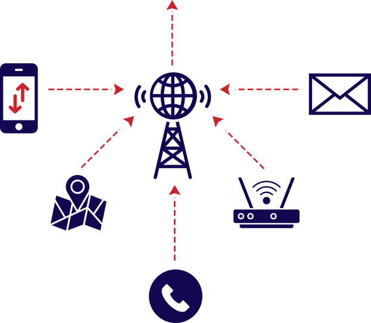

From snooping devices carried in backpacks to locate people through their phones to a massive infrastructure that can intercept even end-to-end encryption from a central command centre, the Awami League government had been on an increasingly aggressive trajectory towards building a powerful surveillance state.
Between 2016 and 2024, the National Telecommunications Monitoring Centre (NTMC), police and Rab collectively purchased surveillance equipment worth over Tk 1,382 crore, according to import data and a contract agreement.
Over the years, NTMC developed a sweeping infrastructure called "Integrated Lawful Interception System (ILIS)" that can intercept, decrypt, inspect, and store enormous volumes of national internet and telecom traffic, enabling real-time, centralised surveillance across agencies.
Rab and police, on the other hand, acquired mostly target-based snooping devices.
Such devices in Rab's possession include mobile and vehicle-mounted jammers, backpack IMSI catchers, and mobile communication analysers, allowing them to block signals and conduct surveillance on mobile activities of specific individuals, documents show.
Police built a broader tactical surveillance capacity, and their purchases included high-end IMSI catchers, GPS trackers, satellite communication analysers, speaker recognition systems, and Man-in-the-Middle tools capable of intercepting encrypted communications and injecting spyware.
The equipment listed and the total value calculated for this story are based on a limited dataset and imports recorded under specific Harmonised System (HS) codes. Similar products may have been imported under different HS codes, which are not reflected in this report.
While surveillance systems are essential to prevent crimes, track criminals, gather intelligence and neutralise threats to national security, experts warn that without transparency and due process, such a powerful surveillance system can be abused to suppress political opponents and snoop on ordinary citizens in violation of their constitutional right to privacy.
Mass surveillance system
While Rab and the police had been focusing on building specific target-based surveillance, NTMC opted to build a mass surveillance infrastructure by installing an "Integrated Lawful Interception System".
By 2022, it purchased the components necessary to monitor and intercept the everyday communications of citizens, store that data centrally, and ensure access by various law enforcement agencies, documents show.
Of the Tk 1,382 crore spent on surveillance equipment by NTMC, police and Rab between 2016 and 2024, NTMC's expenditure alone accounted for more than 65 percent (Tk 904.39 crore).
A copy of a contract agreement shows that US-based Yaana Technologies and its UK subsidiary Yaana Limited helped NTMC to set up the ILIS infrastructure for Tk 546.7 crore.
The ILIS platform, having 10 components, aims to "collect, collate, analyse and disseminate all information to law enforcing agencies that provides pinpoint targets who are actively and passively threatening national security," reads the contract.
The first two components are the mobile and data interception systems capable of intercepting "any individual's all types of electronic communication" as well as data and internet communication "originating, terminating and passing through Bangladesh".
The third component is a mass data acquisition system capable of collecting all internet communication from the national gateway and national internet exchange levels.
The fourth component allows law enforcement agencies to monitor, intercept, and analyse any person's communications across all connected networks and operators, all from a single control point.
The fifth component, called a "unified target profiling system," can collate all intercepted data, analyse communication patterns and give a "full 360 degree picture of any individual over time, place and communication platform".
The sixth and seventh components are a call detail record analysis system and a geolocation system, respectively.
The eighth and ninth components are a digital command centre inside the NTMC premises and an overall operation and management system.
The 10th component includes an "active intrusion system" which can "stealthily capture from any target device, is not limited by encryption or any encoding mechanism, does not depend on user interaction to perform operation and presents all application, file and communication content," contract documents show.
This essentially meant capturing the whole device, according to experts.
Through this system the government can inject malware into users' devices using very benign apps that they may have downloaded to access services, and gain access such that the authorities can essentially see the entire device, said Sabhanaz Rashid Diya, executive director of Tech Global Institute, a technology nonprofit which has long been studying the surveillance landscape of Bangladesh.
"There is one malware that can track keyboard strokes, so it can see what you are typing. Another software can create a backdoor in iOS systems, read messages and download contacts," she added.
The last component of the ILIS also involved a satellite phone interception system.
The Daily Star has no information on the extent to which citizens were targeted by this system during Sheikh Hasina's rule. It is also unclear how the system is being used at the moment.
In a rewritten response to The Daily Star, NTMC admitted having installed the ILIS systems and said that some of its components are still in operation for intelligence gathering and investigation purposes.
"As part of the reform process, NTMC, under the Ministry of Home Affairs, is working on formulating an Act/Ordinance related to Lawful Telecommunication Interception with special attention to Privacy of the Citizens and maintaining International Standard," it said.

Traffic Interception
Intercept all types of electronic, data and mobile communication systems originating, terminating and passing through Bangladesh. This includes phone calls and text messages transmitted via both cell phone and messaging applications, as well as, locations.
Tapping National Gateways
To do this, the system collects all internet communication from the national gateway and national internet exchange levels. Copper Tap Modules splits incoming and outgoing data streams and sends them to separate monitoring ports. Meanwhile, a Fibre Tap mirrors high-speed fibre optic traffic and redirects it for analysis. These feeds are then processed by DeepProbe units, which prepare the data for inspection. The SSL decryption platform intercepts secure connections, decrypts the traffic using managed certificates, and forwards the plaintext data for inspection by security tools.
Decryption and Target Profiling
The DeepProbe units identify which application is being used (e.g., WhatsApp, Signal), timestamps, data volumes, IP addresses, communication types, and user behaviour patterns. Meanwhile, a GSM/Signalling Network Monitoring Platform extracts metadata from voice calls, SMS, and mobile internet traffic. These allow NTMC to build user profiles based on activity patterns, even without accessing message content. In case of encrypted data, a SSL Decryption Platform decrypts secure connections and then re-encrypts it before forwarding the data.
Mass Storage and Mass Surveillance
A digital command centre inside the NTMC premises collects and collates all the intercepted information in massive volumes. All law enforcement agencies can access this server.
Mass surveillance system
The Daily Star shared the list of components purchased by the NTMC with our in-house network specialists. Using information about the components, they reconstructed the ILIS network (see the operational and network structure online) as outlined by its contract.
The surveillance with ILIS begins by intercepting data packets from the internet infrastructure, including undersea fibre optic cables, satellite systems, ISP routes, and telecom networks.
To do this, it uses three Copper Tap Modules (10/100/1000), which split incoming and outgoing data streams and sends them to monitoring ports. Fibre Taps mirrors high-speed fibre optic traffic and redirects it for analysis.
These feeds are then processed by DeepProbe units, which prepare the data for inspection.
The second step is the decryption of the encrypted traffic. SSL(secure sockets layer) is a way to keep data safe when it travels between a browser and a website by locking it with encryption.
The ILIS uses a SSL Decryption Platform which intercepts secure connections, decrypts the traffic for inspection, then re-encrypts it before forwarding the data.
Data show NTMC purchased 15 DeepProbe monitor ports from Yaana, which identifies application usage (e.g., WhatsApp, Signal), timestamps, data volumes, IP addresses, communication types, and user behaviour patterns. A GSM/Signalling Network Monitoring The Platform is also deployed to extract metadata from voice calls, SMS, and mobile internet traffic. This allows NTMC to build user profiles based on activity patterns, even without accessing message content.
Its Social Media Monitoring System, purchased from Ecomtrade Holdings Pte Ltd for Tk 45.11 crore, is capable of tracking activity across platforms.
Kamal Shakil, the manager of foreign trade at Ecomtrade, told The Daily Star that this platform was procured from a Netherlands-based supplier and that they were only the reseller.
To store the large volume of data, NTMC acquired two DRS Hadoop Data Node Hardware units. GPS-disciplined NTP servers ensured all intercepted data was timestamped accurately and consistently across systems.
All these were permitted by as many as 22 laws, including the Bangladesh Telecommunications Regulation Act, 2001, said Diya.
"Bangladesh's surveillance regime is rooted in colonial-era laws that permit spyware use, communication interception, and broad law enforcement access without adequate safeguards," she said.
She called it a "security-first framework" and said that it "spans not just telecom and cyber laws, but also narcotics, anti-terrorism, trade regulations, and import controls—creating a system ripe for abuse."
NTMC's reply to our questions
TDS: What steps have been taken to take out the ILIS from operation?
NTMC: Lawful Telecommunication Interception Systems are technical platforms essential for law enforcement agencies, investigation agencies and intelligence agencies to collect necessary information to investigate cases and identify the accused. Countries around the world have such practice. NTMC established and maintains a few basic LI platforms to support mentioned agencies.
TDS: NTMC had installed Deep Packet Inspection (DPI) devices for monitoring and filtering subscriber internet usage. Are these still operational in Data Centres 3 and 4?
NTMC: DPI devices are not in operation now. Their functionality is being tested. However, a few online betting sites prohibited by the government have been blocked as test purposes. The future usage of this system will depend on proper guidelines/policy.
TDS: In 2022, NTMC purchased a system from Intersec (France) that allowed NTMC to get instant, precise instant and historical location of individuals. Is the system installed by Intersec still active?
NTMC: Yes, the system is active now. Law enforcement agencies, investigation agencies and intelligence agencies utilise the service to locate the accused and victims. More importantly, 999 and Fire Services use this system to instantly locate the victims.
TDS: Does NTMC still pull customer data (Registration information, CDR, SMS content, NID, roaming status, recharge details, package details etc) using an API plugin provided by telecom operators? If yes, then do you obtain a warrant from a magistrate beforehand?
NTMC: As said before, law enforcement agencies, investigation agencies and intelligence agencies utilise the platform to investigate cases and identify the accused. Mentioned agencies complete necessary processes at their end before collecting information.
How the surveillance works
The Daily Star shared the list of components purchased by the NTMC with our in-house network specialists. Using information about the components, they reconstructed the ILIS network (see the operational and network structure online) as outlined by its contract.
The surveillance with ILIS begins by intercepting data packets from the internet infrastructure, including undersea fibre optic cables, satellite systems, ISP routes, and telecom networks.
To do this, it uses three Copper Tap Modules (10/100/1000), which split incoming and outgoing data streams and sends them to monitoring ports. Fibre Taps mirrors high-speed fibre optic traffic and redirects it for analysis.
These feeds are then processed by DeepProbe units, which prepare the data for inspection.
The second step is the decryption of the encrypted traffic. SSL(secure sockets layer) is a way to keep data safe when it travels between a browser and a website by locking it with encryption.
The ILIS uses a SSL Decryption Platform which intercepts secure connections, decrypts the traffic for inspection, then re-encrypts it before forwarding the data.
Data show NTMC purchased 15 DeepProbe monitor ports from Yaana, which identifies application usage (e.g., WhatsApp, Signal), timestamps, data volumes, IP addresses, communication types, and user behaviour patterns. A GSM/Signalling Network Monitoring The Platform is also deployed to extract metadata from voice calls, SMS, and mobile internet traffic. This allows NTMC to build user profiles based on activity patterns, even without accessing message content.
Its Social Media Monitoring System, purchased from Ecomtrade Holdings Pte Ltd for Tk 45.11 crore, is capable of tracking activity across platforms.
Kamal Shakil, the manager of foreign trade at Ecomtrade, told The Daily Star that this platform was procured from a Netherlands-based supplier and that they were only the reseller.
To store the large volume of data, NTMC acquired two DRS Hadoop Data Node Hardware units. GPS-disciplined NTP servers ensured all intercepted data was timestamped accurately and consistently across systems.
All these were permitted by as many as 22 laws, including the Bangladesh Telecommunications Regulation Act, 2001, said Diya.
"Bangladesh's surveillance regime is rooted in colonial-era laws that permit spyware use, communication interception, and broad law enforcement access without adequate safeguards," she said.
She called it a "security-first framework" and said that it "spans not just telecom and cyber laws, but also narcotics, anti-terrorism, trade regulations, and import controls—creating a system ripe for abuse."
Target-based surveillance
Import data obtained by this newspaper begins with the purchase of a radio frequency jammer by Rab in 2016, from Samel 90, a Bulgarian electronics and defence manufacturer.
A radio frequency jammer is not a surveillance device per se – it is a device that deliberately disrupts wireless communication by transmitting interfering signals on the same frequencies used by phones, GPS, or Wi-Fi, effectively blocking them.
However, it can silently thwart gatherings. On multiple occasions during the 15-year rule of the Awami League rule, BNP leaders, activists, and journalists reported that they were unable to place or receive calls from the rally venues.
In 2017, Rab bought a similar network jammer, but this one could be mounted on a vehicle.
The same year, police purchased an IMSI catcher from Cyprus-based Tiersec.
An IMSI catcher, or International Mobile Subscriber Identity catcher, is a surveillance tool designed to monitor, locate, and occasionally intercept mobile phone activity. It operates by mimicking a real cell tower, causing nearby phones to connect to it rather than to an authentic cellular network. The IMSI is a unique number assigned to each mobile SIM card and is used to pinpoint a target within a larger crowd.
Import data show that the police bought more IMSI catchers – one of them bike-mounted – in 2019 and 2022 from Canadian firm Octasic. In total, the police spent Tk 43 crore on IMSI catchers, signifying police's dependence on such snooping devices.
In 2019, they also purchased a mobile tracker server from a German supplier, cleared through Bangladeshi-owned, Singapore-based Panmark Impex.
Two years later, the police acquired a Man-in-the-Middle (MitM) System Detector and Locator — a specialised tool designed to intercept and monitor communications in real time.
The system works by mimicking trusted networks or devices to gain access to sensitive information, including phone calls, messages, emails, and online activity. It can sometimes also break through encrypted connections to expose protected data. Additionally, it can track the physical location of those being monitored.
In 2022, both police and Rab stocked up on their interception infrastructure.
That year, police purchased a Satcom Analyser produced by Swiss surveillance company ATECS AG via a Singaporean firm. A Satcom analyser is a tool that can be used to monitor, intercept, and analyse satellite-based communications, including satellite phones and terminals.
Rab, on the other hand, armed itself with a backpack IMSI catcher and two units of unspecified mobile communication analysers from Octasic. These analysers can generally track which devices are connecting to which networks, their unique identification numbers, phone numbers, locations, and collect information on call logs and text messages.
In 2023, police purchased a portable surveillance and signal intelligence (SIGINT) device from Cyprus-based company Delhaze Ltd. This device can detect, intercept and geolocate wireless communications like mobile phones, radios and satellite links.
The next year, it purchased an even powerful network-jammer – a drone that could sweep across an area blocking communications.
Circumventing export bans
At least 20 companies from 23 countries exported surveillance equipment to Bangladesh.
Twelve of those countries – UK, US, Bulgaria, Czech Republic, Germany, Cyprus, France, Italy, Denmark, Netherlands, Poland, Belgium – prohibit export of surveillance equipment to repressive regimes.
The US Department of Commerce's Bureau of Industry and Security's Entity List blocks American suppliers from providing technology to actors committing human rights abuses.
The European Union's export regulations also do not allow for surveillance sales to countries if there is proof that they could be used to commit human rights abuses.
Many of these countries used clearing houses in Singapore, Cyprus and the United Arab Emirates to circumvent the export restrictions.
Kamal Shakil, the manager at Ecomtrade which supplied some surveillance equipment to NTMC, said, "NTMC contacted the Netherlands-based supplier directly. The supplier did not want to export directly to Bangladesh and wanted to come through a reseller. We did not even know what the product being sent to Bangladesh was. We faced no restrictions in the Netherlands. Singapore provides transshipment facilities for many imports coming into Bangladesh."
At least three of the companies Bangladesh sourced from – Passitora, Teledyne and Tiersec – have Israeli links.
According to its company registration documents, Passitora Ltd, headquartered in Cyprus, is a rebranded version of WiSpear and is linked to Israeli intelligence networks through its founder, Tal Jonathan Dilian, a former Israeli army officer currently under US sanctions for rights abuse. One of its directors at the time of NTMC's purchase was Mivtah Shamir Technologies, a Tel Aviv-based firm.
The NTMC purchased a portable surveillance system from Passitora, costing Tk 52.1 crore.
The company Tiersec is located in Cyprus, but its director is Israeli surveillance entrepreneur Yaron Baratz, and is effectively an Israeli company operating out of Cyprus.
Baratz is the founder of an Israeli surveillance company called Septier.
Teledyne FLIR Detection, Inc, a US manufacturer of thermal and surveillance technologies, maintains a research and development centre in Israel. Its subsidiaries and DVTEL Israel Ltd are incorporated in Israel.
While Yaana Technologies scored the most expensive bid, Singapore-based, Bangladeshi-owned logistics firm Panmark Impex came in second place, having exported surveillance equipment worth Tk 366 crore. They sent 20 shipments, of which 75 percent went to the police and the rest went to Rab.
The company's Managing Director Khorshed Alam Chowdhury said they are not legally liable for any abuse of the devices they supplied.
"Our supplied equipment are tactical "IMSI'' device having no surveillance capabilities; primarily used for finding convicted criminals. To tell you the truth, we are unaware of any instances where our supplied equipment has been used in any act of human rights violations," said Chowdhury.
"Even then, if any misuse of supplied equipment occurred towards violation of human rights in that case it is the end users who have to take the total responsibility for such an occurrence," he said.
Singapore-based Ecomtrade Holdings Pte Ltd is in the top ten suppliers, providing Tk 45.1 crore of equipment. The company is led by Bangladeshi-origin businessman Nurul Amin.
Sixteen other companies supplied goods in 146 shipments worth Tk 418 crore.
One of those suppliers, called Spider Digital Innovation FZE, despite being UAE-based, is Bangladeshi-led. The company belongs to Kazi Monirul Kabir, who was formerly the communications lead at two major telecom operators in Bangladesh. He is also the former country manager for Google in Bangladesh.
They provided NTMC with at least 30 shipments, including the SSL decryption platform, a covert surveillance tool that silently eavesdrops on mobile calls and data called Tactical Passive Cellular Interceptor, and components for an internet traffic inspection system called the Gigamon GigaVUE-HC3 visibility platform.
Kabir categorically stated that they never supplied systems that could be used for human rights abuses. Regarding the Gigamon platform, he said, "You have correctly noted that it gives network traffic visibility, but the project is based on metadata collection, focusing solely on gathering metadata for visibility purposes. There is no option to collect user content."
"We explicitly state that we did not supply components for, nor were we involved in the construction of a broader network traffic visibility infrastructure that collects user content," said Kabir, adding that there were no export restrictions.
The Daily Star also emailed Yaana, Teledyne, Octasic, Vehere and Roya International, the company which had supplied goods from the Swiss surveillance company ATECS AG but did not receive any response. We also sent written questions to Rab and police, but they did not respond.